SLATE
Branding, Logo, Competitive Market Research, App Design Consultancy, Web Design · 2025

Slate is a product of Random Labs, a Y Combinator-backed AI startup. I was brought on ahead of Slate's public launch in 2025 to define the brand: competitive research, positioning and voice, logomark and logotype exploration, a type system, and a set of site wireframes. Everything here is the direction I proposed.
Context
Random Labs is a Y Combinator-backed startup building Slate, a developer-native orchestration system for multi-agent coding. I came in during 2025, ahead of the product's public launch, to define the brand clearly and design a logo.
What I Did
I proposed a five phase plan at the start and moved through it in order, checking in for approval before starting the next one. Phases one through three are what you see here.
Phase 1: Discovery and Research
Competitor analysis and a market positioning review, then audience and tone work. Working from the team's own user notes, I identified the four core personas we'd design for: backend, full-stack, leads, and DevOps. I also ran a session on tone attributes, landing on confident, technical, modular, trustworthy, efficient.
Mostly I was trying to understand them and their users well enough to know what their audience would be drawn to and what would put them off. Down to small things: aesthetics, tone, how the interface should feel.
I looked at how other agent and developer tools were positioning themselves, plus sites from brands the team admired, to find where Slate could sit apart. Then I built moodboards and pulled everything into a set of discovery highlights so we could agree on a direction before I designed anything.
Phase 2: Strategy and Brand Foundation
I talked with one of the founders a lot, and from those conversations I wrote the brand foundation: what Slate is, why it exists, its origin story, mission, vision, and who it's for.
That included a tone and voice guide with a do-say and don't-say list, so the team could write consistently without me. The short version: confident, not arrogant. Minimal, not dry. Tactile, not flashy. Built like a README, not a billboard.
Phase 3: Visual Exploration
Logomark. 15 logo options total revolving around central concepts of composability, orchestration, and customization. Some were deliberately unconventional, included to test the edge of the brand's taste rather than to be chosen.
Logotype. Eight wordmark directions. All stenciled, geometric, or grotesques, tested at the sizes and contexts the mark would actually live in.
Type system. Heading and body faces paired with fallback options, so they could be applied without me.
Site design
Alongside the brand work, a wireframe set for the marketing site: home in desktop and mobile, a getting started flow in both, and a blog template. Plus a visual draft of the site itself.
What I Learned
A couple things.
Brand work moves at the speed of team alignment. I had approval at every phase gate, but most of my conversations ran through one point of contact. I've learned that a sign-off from one person isn't the same as alignment across a founding team, and that getting everyone with a say into the room early should be part of my ask upfront.
And I'd cut the options in half. My deck was fifty-one pages which is way too many in retrospect (lol). I was excited and I had ideas, but volume isn't generosity. It puts the work of choosing onto the client which is just overwhelming. I should have trusted my intuition to choose and present the three strongest directions. I suppose I did that in part of an effort to “over communicate” my experimentation process which was at the request of the team (in my defense).
In the End
The engagement wrapped after visual exploration. I compiled the directions the team had chosen and handed those off. The deeper design refinement and full brand book in phases four and five were scoped but didn't happen. I delivered the chosen directions compiled together, without the deeper development I'd have wanted.
Artifacts
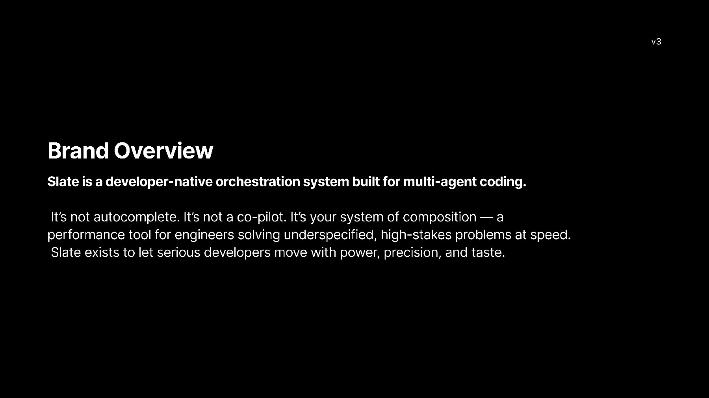
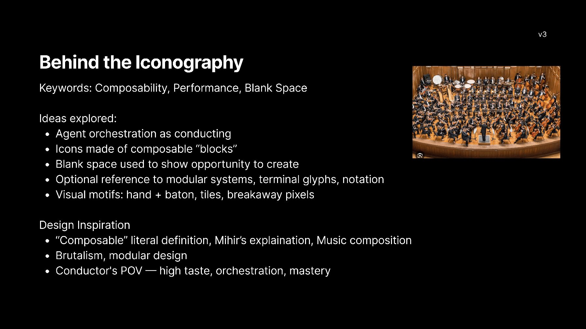
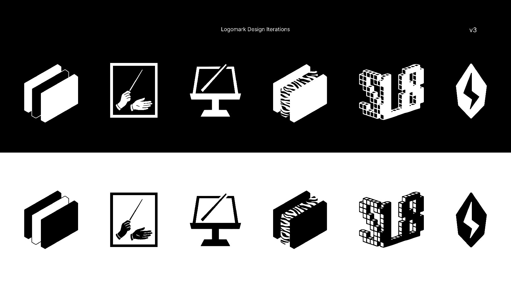
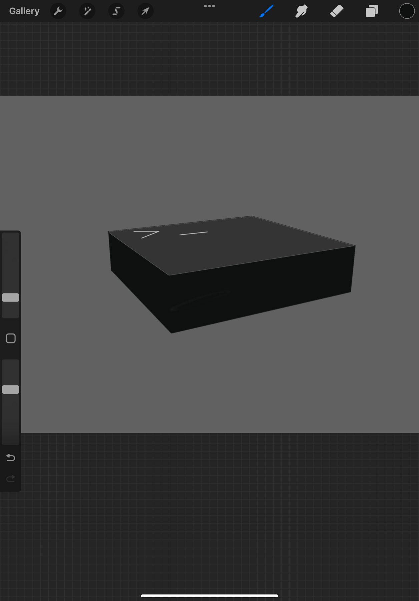
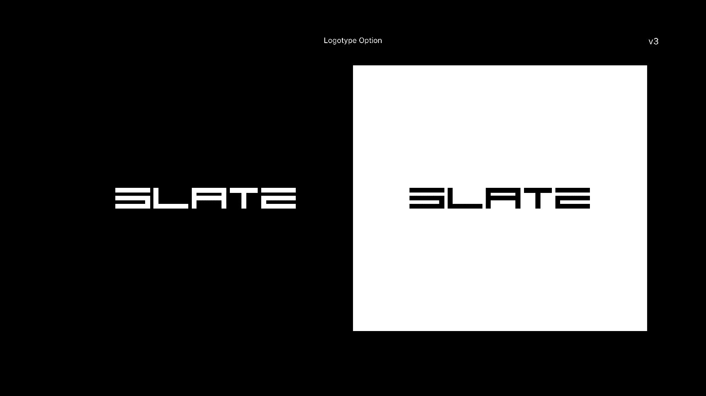
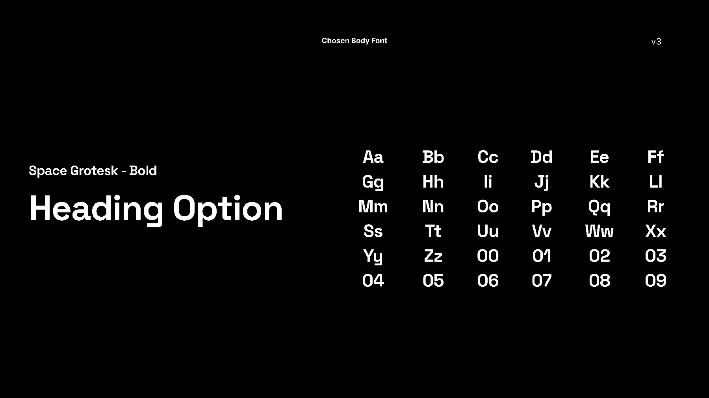
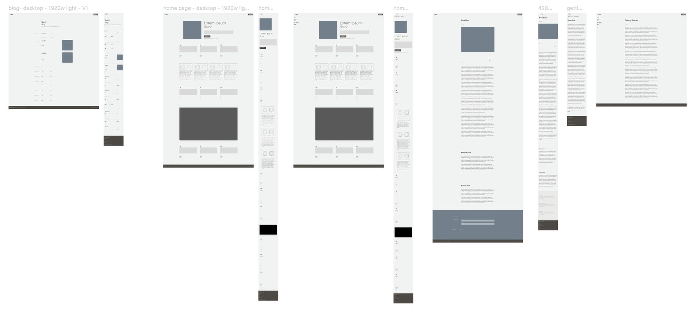
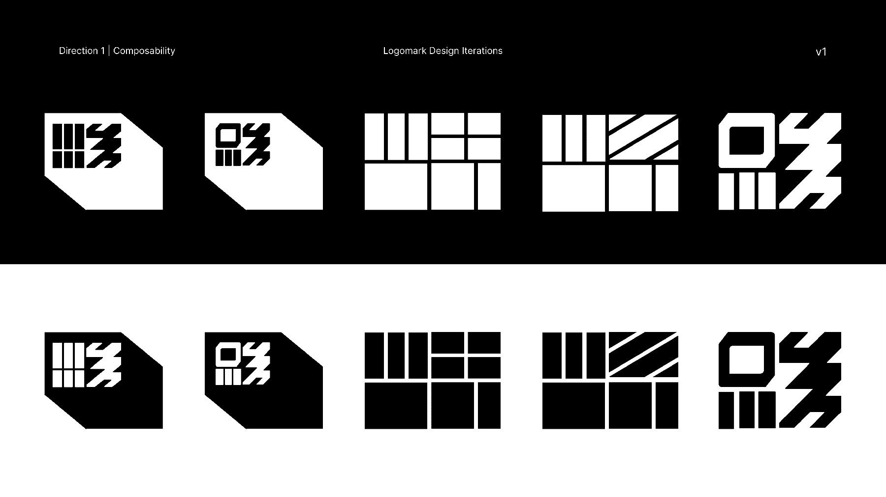
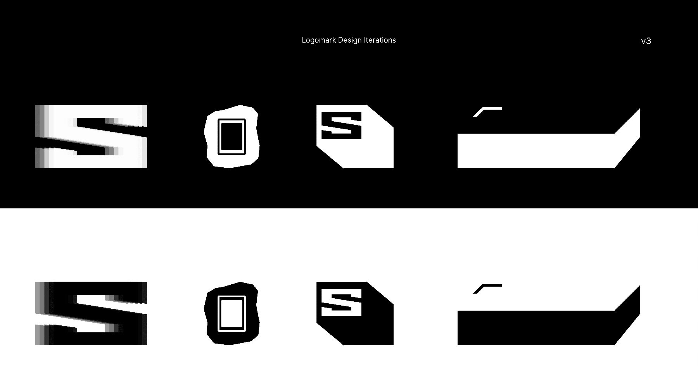
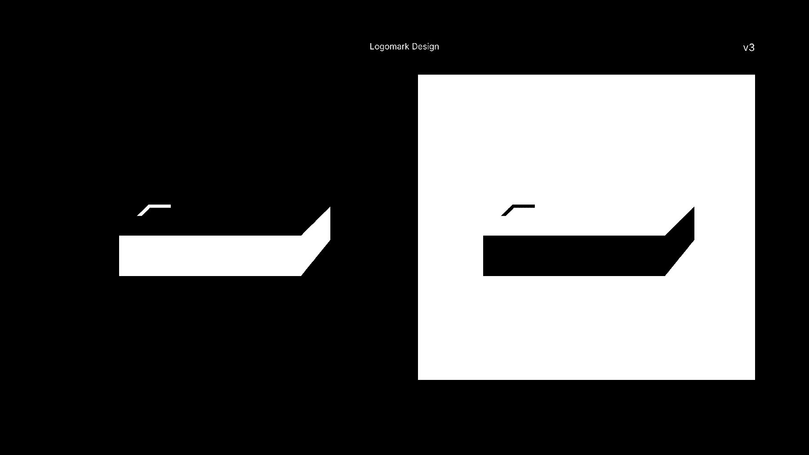
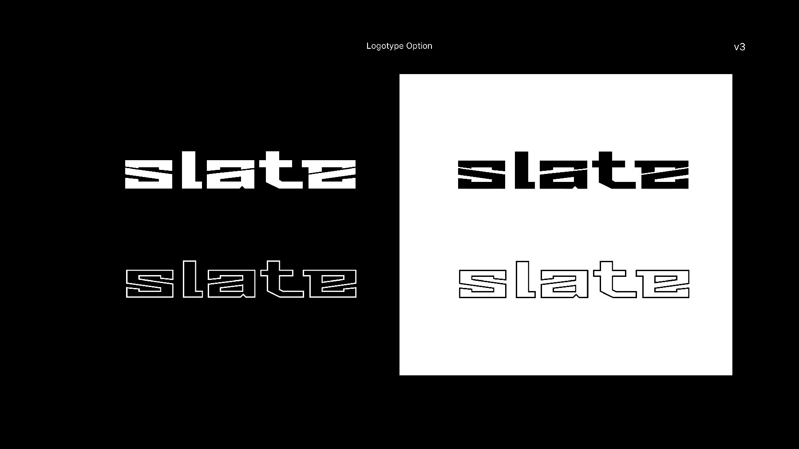
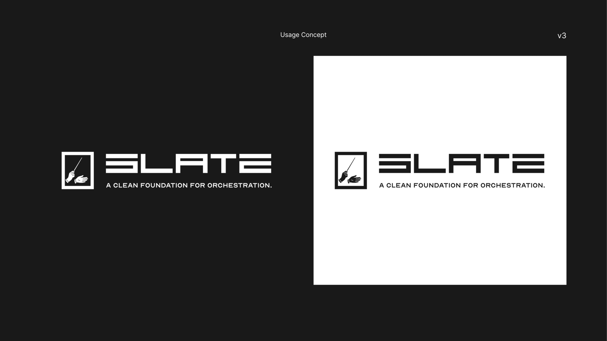